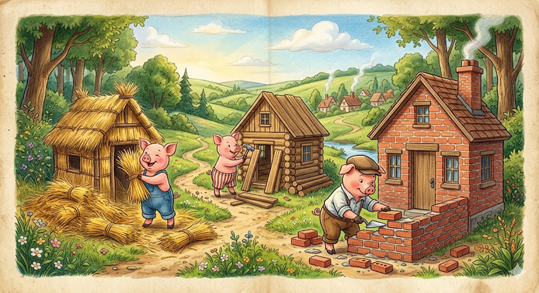

Los tres cerditos salen al mundo a buscar fortuna. Para refugiarse de las amenazas de la naturaleza y del lobo hambriento, deciden fabricar una vivienda cada uno:
- El cerdito menor: Construye una casa de paja. Lo hace de forma rápida y sin esfuerzo para poder irse a jugar de inmediato.
- El cerdito mediano: Construye su hogar con madera. Le toma un poco más de tiempo, pero igualmente se apresura para reunirse con su hermano menor y divertirse.
- El cerdito mayor: Trabaja arduamente y edifica una casa compacta de ladrillos y cemento. Sus hermanos se burlan de él por dedicarle tanto esfuerzo, pero él busca una estructura verdaderamente segura.
La llegada del lobo
Un día, el lobo feroz aparece en el bosque decidido a comérselos:
- La casa de paja: El lobo se para frente a ella y grita: "¡Soplaré y soplaré y tu casa derribaré!". Al soplar con fuerza, la paja sale volando. El cerdito menor escapa asustado hacia la casa de madera de su hermano.
- La casa de madera: El lobo los persigue, llega a la segunda casa y repite la amenaza. Tras soplar con más intensidad, la estructura de madera también se derrumba. Ambos cerditos huyen desesperados a refugiarse con el hermano mayor.
- La casa de ladrillo: El lobo sopla y sopla con todas sus fuerzas, pero la casa de ladrillos no se mueve en absoluto.
El desenlace
Al ver que no puede derribar las paredes, el astuto lobo decide entrar trepando al tejado para colarse por la chimenea. Sin embargo, los cerditos se dan cuenta de su plan y colocan debajo un gran caldero con agua hirviendo. Cuando el lobo desciende, cae directo al agua, se quema la cola fuertemente y huye del bosque dando alaridos para no regresar jamás.
Moraleja
La historia enseña el valor del esfuerzo, la responsabilidad y el trabajo bien hecho. Demuestra que la pereza y los caminos rápidos suelen traer malas consecuencias en los momentos de dificultad.